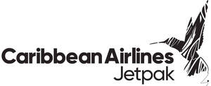

Trade Mark Journal No.2025/032 8 August 2025
UK00004241199 29 July 2025 (39)

- Class 39
- Cargo transportation; cargo unloading; cargo handling; cargo delivery services; cargo container rental services; arranging for the shipping of cargo; air transportation services for cargo; air cargo transport services; air cargo transport; import cargo handling services; import cargo transport services; export cargo transport services; export cargo handling services; delivery of cargo; loading of cargo; packing of cargo; shipping of cargo; storage of cargo; transportation of cargo; transportation of cargo by air; transport of cargo; transport of cargo by air; unloading of cargo; unloading cargo and luggage; airline services for the transport of cargo; airline services for the transportation of cargo; cargo handling and freight services; transportation of passengers and cargo by air; transport of passengers and cargo by air; freighting; freight brokerage; freight forwarding; freighting services; freight transportation; freight warehousing; air freight shipping services; air transportation of freight; air transport of freight; express delivery of freight; freight and transport brokerage; freight brokerage [forwarding (Am.)]; freight [delivery of goods]; freight forwarding agency services; freight forwarding by air; freight forwarding services; freighting and ship brokerage services; freight loading services; freight [shipping of goods]; freight ship transport; freight transportation brokerage; freight transportation by air; freight transportation by land; freight transportation by lorry; freight transportation by road; freight transportation by sea; packing of freight; transportation of freight by air; transport of freight by air; air and sea freight transport; arranging for the transportation of air freight; arranging for the transport of air freight; international air freight shipping services; transportation of freight by sea, air, rail or road; transport of freight by air and sea; transport of freight by sea, air, rail or road; global transportation of freight for others by all available means; loading, packing, storage, transportation and unloading of freight; tracking of passenger or freight vehicles by computer or via global positioning systems; tracking of passenger or freight vehicles by computer or via GPS; collection, storage, distribution and delivery of letters, correspondence, magazines, packets, parcels, newspapers, freight and of goods, all by messenger, road, rail, air or water; collection, storage, distribution and delivery of letters, correspondence, magazines, packets, parcels, newspapers, freight and goods, all by messenger, road, rail, air or water.
Caribbean Airlines Limited
Representative: Reddie & Grose LLP